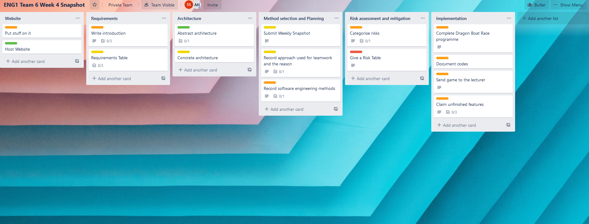
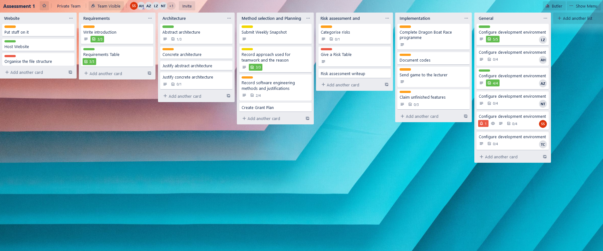
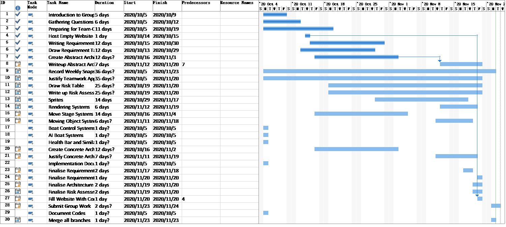
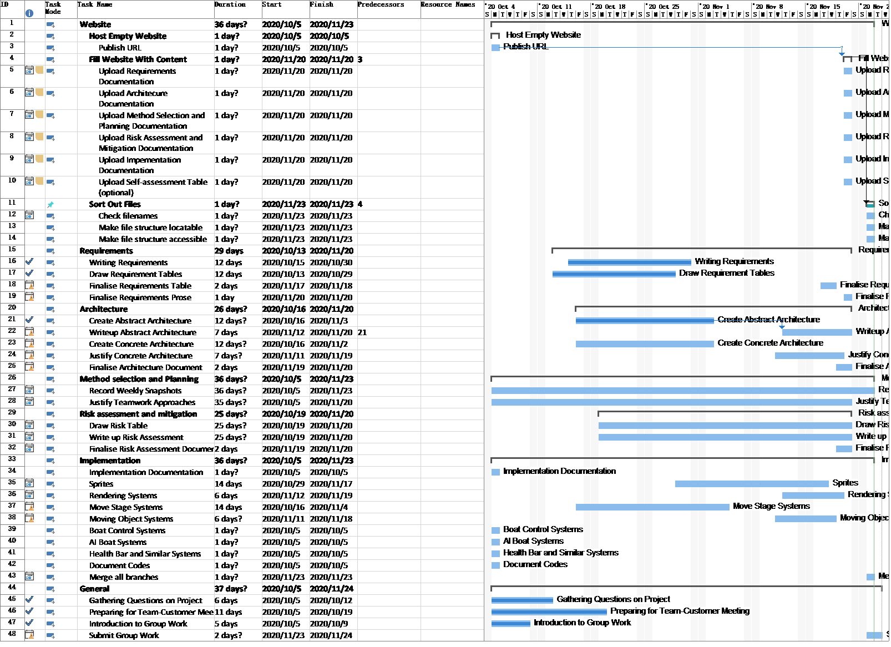
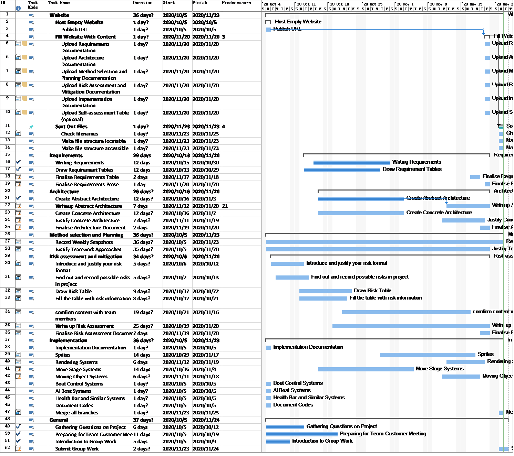
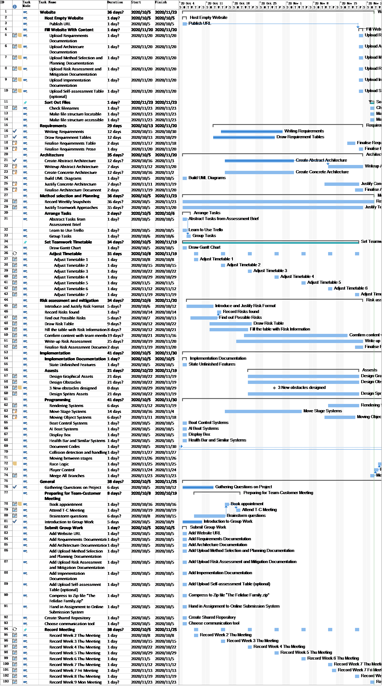
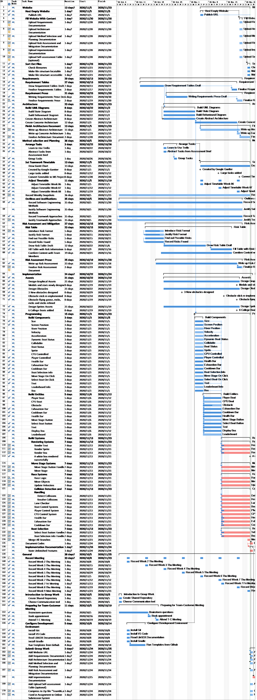

Weekly Snapshot Page
29th October 2020 - started using trello. Added some simple tasks and assigned them to all of the members of the team. The meaning of colors: green - done, yellow - doing, red - blocked by other tasks, orange - todo

5th November 2020 - Added a general task bar for seting up the environment for coding, new tasks are introduced, San finished the requirements table

19th November 2020 - Converted to Gantt chart. Add Task "Document Codes" and "Merge all branches"

21th November 2020 - Organised tasks by their catergories

21th November 2020 - Add 4 more tasks in Group Risk and Mitigation

22th November 2020 - Found more tasks from to-do list and chat history

23th November 2020 - Corrected the start date and finish date mainly in section Implement, Architecture and General, reset the rest of starting dates and finishing dates, stated the rate of complete for each tasks, prioritise every tasks and summaries, highlighted critical path in red.
